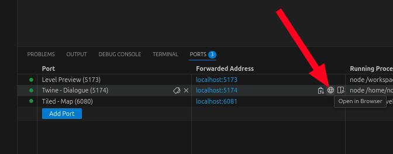
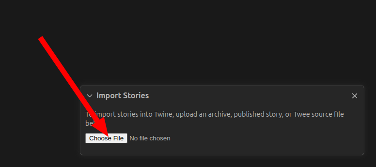

💬 Creating dialogue
Dialogue is an important aspect of your Get Lost level. Through dialogue, you can reveal parts of your story that are difficult to tell visually. Get Lost dialogue can be dynamic, changing with time of day, items that the player has, or choices that they've made.
Info
Looking for the SugarCube reference? Go here.
We use Twine to create dialogue, and it comes builtin to the Get Lost development environment. This means you don't need to install anything.
In this tutorial, we'll add dialogue for a new NPC named Omar.
🚀 Fire up Twine
Go to your Ports tab in VSCode and open the Twine - Dialogue port in the browser. This will launch the Twine software.

Once your browser tab opens, you should see the Twine interface. You'll see an existing story named "Level", like the following:
Double-click on the story to open it for editing.
If you don't see the default story, you might need to import it from your level files first. Go to Library then Import:
Click Choose File then select your story file from <your level dir>/level/story/Level.twee

🆕 Add a new passage
Since our Omar NPC will be totally new, there are no existing passages(1) to attach to, so we need to create some new nodes. Start by finding the Start passage(2) and double clicking it to open it.
- A passage is what Twine calls a dialogue node in the story.
- The start passage has a little green spaceship attached to it. 🚀
Now add a link for Omar by adding the following line: [[Talk to Omar|Omar]]. Once you've done that, a new passage automatically appears in the workspace:

🗪 Add new dialogue
The new Omar passage has no content, which is why it has a dashed border. Double click it so we can add some content. The content that we'll add will be what Omar says when we interact with him. Write anything you want.

We also want all conversations with Omar have the title "Omar" at the top(1). We can do this by putting a tag on this passage. Click the "+ Tag" button, then select "New Tag", set "Tag name" to "Omar" and optionally set a color. Then click "+ Add".

This will make it so that the all interactions with Omar have the title "Omar" when you're playing the game.
Note
You only need to set a tag on the very first passage for the NPC. This tag will be automatically inherited by all of the passages underneath it.
🤔 Add dialogue choices
Now that we have a text interaction with Omar, let's add some choices. Add the following lines to your passage:
When you add this text to your passage, Twine will automatically create 2 new connected passages.
Now repeat the process with the new passages—write new dialogue, then create new responses with links.
🧩 Add logic
Twine nodes support a basic programming language(1). It's not as powerful as a real programming language, like Javascript or Python, but most of the time it's enough to do what you want. It's called SugarCube.
- We call it a programming language, but Twine calls it a "story format." Twine has several story formats, and they're all effectively different languages, but SugarCube is the only one we support.
Let's add some logic that will display a different message if the user has talked with Omar already. Change your Omar dialogue to have the following contents:
<<if visited() > 1>>
Welcome back.
<<else>>
What up, I'm Omar.
<</if>>
[[What is this place?]]
[[How did I get here?]]
Now, if it's the first time the player has interacted with Omar, they'll be presented with:
And every time afterwards, they'll be presented with:
Info
You're not just limited to putting text within <<if>> and <<else>>; you can put links as well.
SugarCube is a powerful markup language. You can set variables, call functions, and trigger events. For the full reference of what Get Lost supports, go here.
✅ Trigger your dialogue
Now that we have a basic interaction, we need to tell your level code how to fire off that interaction. There are two ways to do this.
- Force the dialogue when the player touches a sensor.
- Show an "Interact" button when the player touches a sensor, then show the dialogue when they press that button.
👀 Forcing the dialogue
This option is good for mandatory dialogue that the player must see. To do this, open level/code/main.ts and find the sensorEvent handler. It should look something like this:
export function sensorEvent(
initiator: string,
sensorName: string,
entered: bool
): void {
if (initiator !== "player") {
return;
}
if (sensorName === "flame") {
dialogue.stage_Fire(entered);
} else if (sensorName === "knight") {
dialogue.stage_Knight(entered);
} else if (sensorName === "well") {
dialogue.stage_Well(entered);
} else if (sensorName === "nazar") {
dialogue.stage_Nazar(entered);
} else if (sensorName === "water") {
inWater = entered;
}
// ...
}
We add a new else if section for a new sensor:
This will make it so that when the player enters the sensor(1) named omar, your dialogue for Omar will be displayed. However, the player won't have a choice in seeing the dialogue, so if that's what you want, read on.
- You'll still need to set up the sensor in the Tiled map editor, either by creating a new sensor object, or by adding an NPC and naming it
omar.
👉 Staging the dialogue
Use this option if you want to give the player freedom about when the dialogue is displayed. The code looks basically the same as forcing dialogue, except we use dialogue.stage_Omar(entered) instead of dialogue.passage_Omar(). What this does is it gives the player an Interact button when they enter the sensor. When they click the button, the buttonPressEvent fires, and dialogue.dispatch(passageId) is called to show your Omar passage.

🕹️ Play your changes
Each time you make a change in Twine, it autosaves and reloads the level preview. The typical workflow involves going back and forth between the level preview tab and the twine tab, making changes, then trying those changes.
Info
Unfortunately, each time the level preview reloads, the whole level is reset, so you have to play through your dialogue from the beginning.
ğŸ› ï¸ Debug your dialogue
Get Lost automatically transpiles(1) your Twine dialogue into an Assemblyscript file that lives in level/code/generated/dialogue.ts. Feel free to look at the generated code to see what it's doing.
- Transpiling is converting from one source code to another. In this case, we're converting from a Twine
.tweefile to AssemblyScript.
Warning
Any changes that you make to the generated dialogue file will be overwritten when the file is regenerated. It is not designed to be edited.